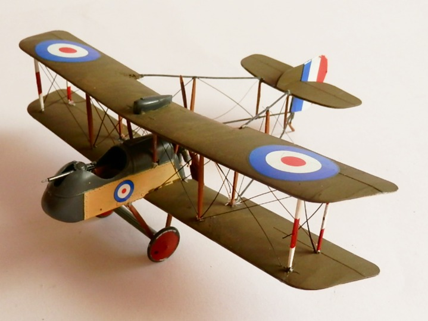
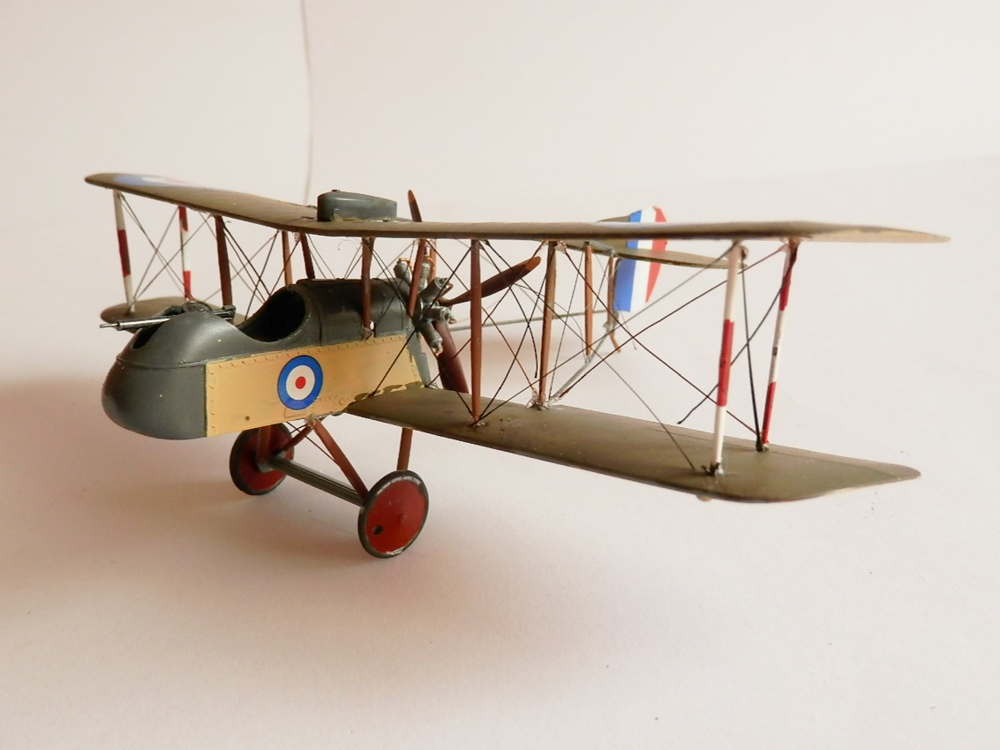
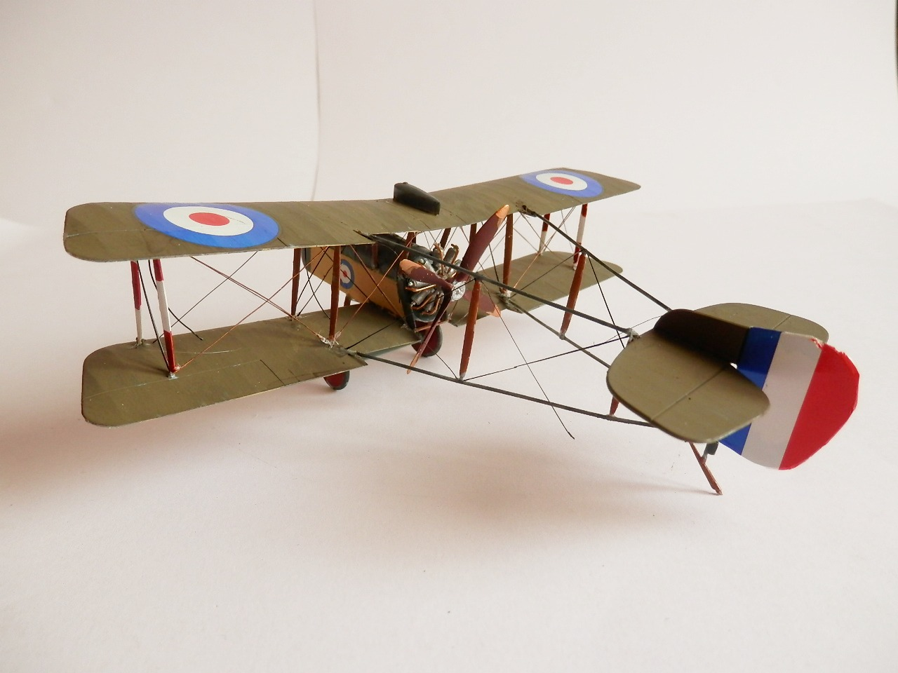

Aerei · scale model archive
DeHavilland DH2
DeHavilland DH2 — Kit: Revell, Scale: 1/72. No. 24 Sqn. RFC 5964 (Lanoe Hawker) He was shot down on 23 November 1916 by Mannfred von Richthofen -…

Photo gallery


English description
No. 24 Sqn. RFC 5964 (Lanoe Hawker) He was shot down on 23 November 1916 by Mannfred von Richthofen - Bertangles FR
Descrizione italiana
No. 24 Sqn. RFC 5964 (Lanoe Hawker). Fu abbattuto il 23 novembre 1916 da Manfred von Richthofen - Bertangles, Francia.